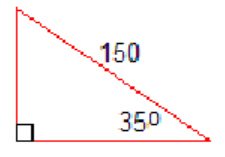

Example1.1
The hypotenuse of a right triangle is 150 feet long, and one of the angles is \(35 \degree\text{,}\) as shown in the figure. Solve the triangle.

A triangle has six parts: three sides and three angles. In a right triangle, we know that one of the angles is \(90 \degree\text{.}\) If we know three parts of a right triangle, including one of the sides, we can use trigonometry to find all the other unknown parts. This is called solving the triangle.
The hypotenuse of a right triangle is 150 feet long, and one of the angles is \(35 \degree\text{,}\) as shown in the figure. Solve the triangle.
Sketch a right triangle with
Without doing the calculations, list the steps you would use to solve the triangle.
While watching her niece at the playground, Francine wonders how steep the slide is. She happens to have a tape measure and her calculator with her, and finds that the slide is 77 inches high and covers a horizontal distance of 136 inches, as shown below.
Francine knows that one way to describe the steepness of an incline is to calculate its slope, which in this case is
\begin{equation*} \dfrac {\Delta y}{\Delta x} = \dfrac{77}{136} = 0.5662 \end{equation*}However, Francine would really like to know what angle the slide makes with the horizontal. She realizes that the slope she has just calculated is also the tangent of the angle she wants.
If we know the tangent of an angle, can we find the angle? Yes, we can: locate the key labeled TAN\(^{-1}\) on your calculator; it is probably the second function above the TAN key. Enter
\begin{equation*} \text{TAN}^{-1} 0.5662 \end{equation*}and you should find that
\begin{equation*} \text{tan}^{-1} 0.5662 = 29.52 \degree\text{.} \end{equation*}This means that \(29.52 \degree\) is the angle whose tangent is \(0.5662\text{.}\) We read the notation as “inverse tangent of 0.5662 is 29.52 degrees.”
When we find tan\(^{-1}\) of a number, we are finding an angle whose tangent is that number. Similarly, sin\(^{-1}\) and cos\(^{-1}\) are read as “inverse sine” and “inverse cosine.” They find an angle with the given sine or cosine.
Find the angle whose sine is \(0.6834\text{.}\)
In the last example, the two equations
\begin{equation*} \sin 43.11\degree = 0.6834~~~~~~\text{and}~~~~~~\sin^{-1} 0.6834 = 43.11\degree \end{equation*}say the same thing in different ways.
The notation \(\sin^{-1} x\) does not mean \(\dfrac{1}{\sin x}\text{.}\) It is true that we use negative exponents to indicate reciprocals of numbers, for example \(a^{-1} = \dfrac{1}{a}\) and \(3^{-1} = \dfrac{1}{3}\text{.}\) But “sin” by itself is not a variable.
(You may recall that \(f^{-1}(x)\) denotes the inverse function for \(f(x)\text{.}\) We will study trigonometric functions in Chapter 4.)
Write the following fact in two different ways: \(68\degree\) is the angle whose cosine is \(0.3746\text{.}\)
Find the angle of inclination of a hill if you gain 400 feet in elevation while traveling half a mile.
The tallest living tree is a coast redwood named Hyperion, at 378.1 feet tall. If you stand 100 feet from the base of the tree, what is the angle of elevation of your line of sight to the top of the tree? Round your answer to the nearest degree.
The trigonometric ratios for most angles are irrational numbers, but there are a few angles whose trig ratios are “nice” values. You already know one of these values: the sine of \(30\degree\text{.}\) Because the sides of a right triangle are related by the Pythagorean theorem, if we know any one of the trig ratios for an angle, we can find the others.
Recall that the side opposite a \(30\degree\) angle is half the length of the hypotenuse, so \(\sin 30\degree = \dfrac{1}{2}\text{.}\)
The figure at right shows a 30-60-90 triangle with hypotenuse of length 2. The opposite side has length 1, and we can calculate the length of the adjacent side. \begin{align*} 1^2 + b^2 \amp = 2^2 \\ b^2 \amp = 2^2 - 1^2 = 3 \\ b \amp = \sqrt{3} \\ \end{align*}
Now we know the cosine and tangent of \(30\degree\text{.}\)
\begin{equation*} \cos 30\degree = \dfrac {\text{adjacent}}{\text{hypotenuse}} = \dfrac{\sqrt{3}}{2} ~~~~~~~~ \tan 30\degree = \dfrac {\text{opposite}}{\text{adjacent}} = \dfrac{1}{\sqrt{3}} \end{equation*}These are exact values for the trig ratios, but we can also find decimal approximations. Use your calculator to verify the following approximate values. \begin{align*} \amp \blert{\text{exact value}} \amp\amp \blert{\text{approximation}} \\ \cos 30\degree \amp = \dfrac{\sqrt{3}}{2} \amp\amp \approx 0.8660 \\ \tan 30\degree\amp = \dfrac{1}{\sqrt{3}} \amp\amp \approx 0.5774 \\ \end{align*}
It is important for you to understand the difference between exact and approximate values. These decimal approximations, like nearly all the other trig values your calculator gives you, are rounded off. Even if your calculator shows you ten or twelve digits, the values are not exactly correct -- although they are quite adequate for most practical calculations!
The angles \(30\degree\text{,}\) \(60\degree\text{,}\) and \(45\degree\) are “special” because we can easily find exact values for their trig ratios, and use those exact values to find exact lengths for the sides of triangles with those angles.
The sides of an equilateral triangle are 8 centimeters long. Find the exact length of the triangle's altitude.
From this exact answer, we can find approximations to any degree of accuracy we like. You can check that \(4\sqrt{3} \approx6.9282\text{,}\) so the altitude is approximately 6.9 centimeters long.
Use the figure in the previous example to find exact values for the sine, cosine, and tangent of \(60\degree\text{.}\)
There is one more special angle: \(45\degree\text{.}\) We find the trig ratios for this angle using an isosceles right triangle. Because the base angles of an isosceles triangle are equal, they must both be \(45\degree\text{.}\)
The figure shows an isosceles right triangle with equal sides of length 1. You can use the Pythagorean theorem to show that the hypotenuse has length \(\sqrt{2}\text{,}\) so the trig ratios for \(45\degree\) are
\begin{align*} \sin 45\degree \amp = \dfrac {\text{opposite}}{\text{hypotenuse}} = \dfrac{1}{\sqrt{2}} \approx 0.7071 \\ \cos 45\degree \amp = \dfrac {\text{adjacent}}{\text{hypotenuse}} = \dfrac{1}{\sqrt{2}} \approx 0.7071 \\ \tan 45\degree\amp = \dfrac {\text{opposite}}{\text{adjacent}} = 1 \\ \end{align*}
Here is a summary of the trig ratios for the special angles.
| Trigonometric Ratios for the Special Angles | |||
| Angle | Sine | Cosine | Tangent |
| \(30\degree\) | \(\dfrac{1}{2} = 0.5 \) | \(\dfrac{\sqrt{3}}{2} \approx 0.8660\) | \(\dfrac{1}{\sqrt{3}} \approx 0.5774\) |
| \(45\degree\) | \(\dfrac{1}{\sqrt{2}} \approx 0.7071\) | \(\dfrac{1}{\sqrt{2}} \approx 0.7071\) | \(1\) |
| \(60\degree\) | \(\dfrac{\sqrt{3}}{2} \approx 0.8660\) | \(\dfrac{1}{2} = 0.5 \) | \(\sqrt{3} \approx 1.732\) |
You should memorize the exact values for these trig ratios. A good way to remember them is to know the two special triangles shown below. From these triangles, you can always write down the three trig ratios for the special angles.

You should also be able to recognize their decimal approximations.
We can use the special angles as benchmarks for estimating and mental calculation. For example, we know that \(60\degree \approx 0.8660\text{,}\) so if sin \(\theta = 0.95\) for some unknown angle \(\theta\text{,}\) we know that \(\theta \gt 60\degree\text{,}\) because as \(\theta\) increases from the sine of \(\theta\) increases also.
If \(\cos \alpha \gt \dfrac{\sqrt{3}}{2}\text{,}\) what can we say about \(\alpha\text{?}\)
If \(1 \lt \cos \beta \lt \sqrt{3}\text{,}\) what can we say about \(\beta\text{?}\)
Simplify.
Rationalize the denominator.
The exact values of trigonometric ratios of the special angles should be memorized.
| Angle | Sine | Cosine | Tangent |
| \(30\degree\) | \(\dfrac{1}{2} = 0.5 \) | \(\dfrac{\sqrt{3}}{2} \approx 0.8660\) | \(\dfrac{1}{\sqrt{3}} \approx 0.5774\) |
| \(45\degree\) | \(\dfrac{1}{\sqrt{2}} \approx 0.7071\) | \(\dfrac{1}{\sqrt{2}} \approx 0.7071\) | \(1\) |
| \(60\degree\) | \(\dfrac{\sqrt{3}}{2} \approx 0.8660\) | \(\dfrac{1}{2} = 0.5 \) | \(\sqrt{3} \approx 1.732\) |
You can remember the trig values for the special angles if you memorize two triangles:
Practice each skill in the Homework Problems listed.